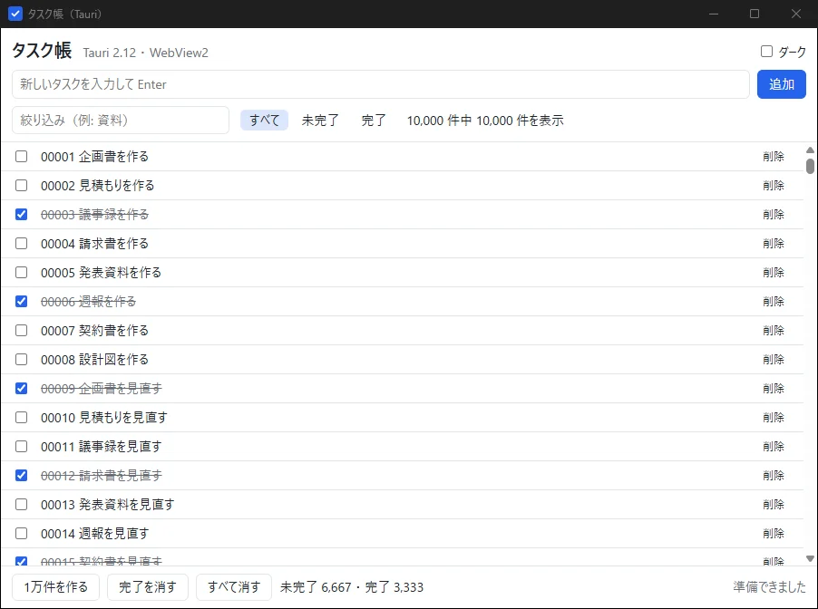
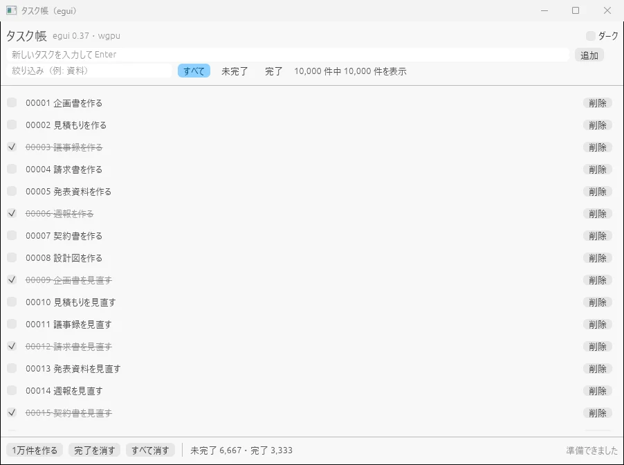
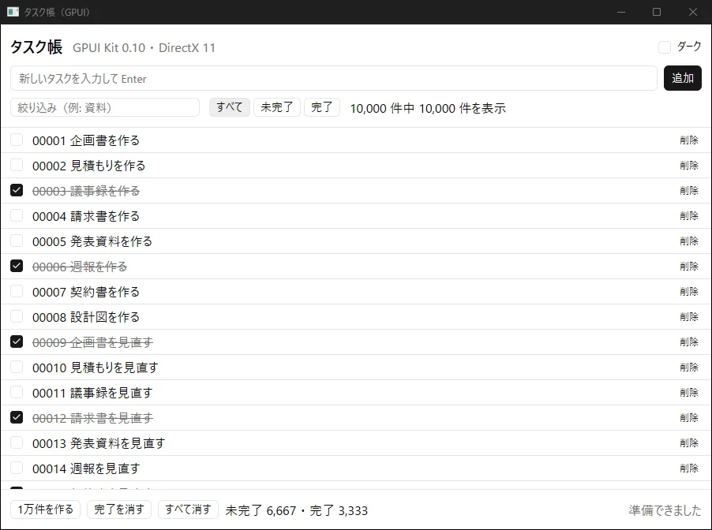

実験レポート 番外編 ・ 2026 年 11 月 20 日
Rust の GUI はどれを選ぶ？ Tauri・egui・GPUI で同じアプリを作って比べた
Rust でデスクトップアプリの画面を作るときによく名前が挙がる、Tauri・egui・GPUI の 3 つで、同じ機能・同じ画面の「タスク帳」を作りました。3 つを同じ PC で動かし、起動の速さ・メモリ・CPU を測りました。メモリの値上がりで PC が高くなった 2026 年 11 月の事情を考え、性能の低い PC をまねた条件でも確かめています。
続き: この結果を受けて、3 つの長所を残して短所をなくす GUI フレームワークを自分で作り、同じ道具で測りました。自分で作ったら勝てたか？ Rust の GUI フレームワーク kargui を作って、同じ道具で測った（2026 年 11 月 21 日）



結論
迷ったら Tauri を選べば、大きく外すことはありません。性能の低い PC で軽く動かすことを最優先にするなら、egui を OpenGL（glow）で描く設定で使います。GPUI は測った中でいちばん軽いものの、2026 年 11 月の時点では Rust に慣れた人向けです。
- Tauri: できることがいちばん多く、安定版で、資料も多いです。ただし 3 つの中でいちばん重く、メモリは待機中に 76 MB、スクロールのあとは 154 MB でした。CPU を 1 コアに絞ると、起動に 4.57 秒かかりました。一方で、GPU のない PC でも滑らかに動いたのは Tauri だけでした。
- egui: いちばん書きやすく、1 フレームを描く CPU の時間もいちばん短い（1.69 ms）です。重さは描き方の設定で大きく変わります。glow なら起動 0.48 秒・メモリ 35 MB と軽いのですが、既定の wgpu ではメモリ 97 MB に加えて GPU のメモリを 239 MB 使います。
- GPUI: メモリ 14.4 MB・起動 0.56 秒で、測った中でいちばん軽いです。前面にない窓のフレームを抑えて、CPU も節約します。ただし公式の crate が止まっていて、配る形が分かれ、文書も少ないです。Discord と GitButler が採用を進めているので、1〜2 年で評価がいちばん変わりそうなのは GPUI です。
「これを使えば間違いない」と言い切れるものは、今回の 3 つにはありませんでした。3 つとも、はっきりした弱点があるからです。用途ごとの選び方とティア表で、何を重視するかに合わせて選べるようにしました。
比べた 3 つ
3 つは、画面を描く仕組みがまったく違います。この違いが、メモリや起動の速さの差の元になります。
Tauri 2.12.7
画面を HTML・CSS・JavaScript で作り、OS に入っているブラウザーの部品に表示させます。Windows では WebView2（Microsoft Edge の中身）を使います。Rust は、ファイルの読み書きなどの裏側の処理を受け持ちます。
egui 0.37.0
画面を描くコードを、描くたびに上から実行し直す「即時モード」の GUI です。ボタンを置くコードと、押されたかを調べるコードが同じ 1 行になります。アプリの形にするには eframe を組み合わせます。
GPUI（GPUI Kit 0.10.0）
エディタの Zed のために作られた、GPU で描く GUI です。部品を残しておき、変わった所だけを描き直します。見た目の書き方は Tailwind CSS に似ています。入力欄やボタンは、Longbridge 社の部品集 GPUI Kit を使いました。
GPUI の版について。crates.io の公式の gpui は、2025 年 10 月の 0.2.2 から更新されていません。2026 年 2 月、Zed の開発者は「Zed に直接関係しない GPUI の作業は後回しにする」と伝えました。それ以降、Zed の中の GPUI を外から使うには、写しを配る別の crate を使います。GPUI Kit 0.10.0 は、そうした写しの 1 つ（gpui-pre 0.3.12）に版を固定しています。今回は、この組み合わせを「いま GPUI でアプリを作る人がふつうに選ぶ形」として使いました。
作ったアプリ「タスク帳」
3 つの版で、機能と画面の並びをそろえました。
- 新しいタスクの入力欄と「追加」ボタン（Enter でも追加できる）
- 絞り込みの入力欄と、「すべて・未完了・完了」の切り替え。表示している件数
- タスクの一覧（1 行 32 ピクセル）。行ごとに、完了のチェックと「削除」
- 「1万件を作る」「完了を消す」「すべて消す」のボタン、ダークモードの切り替え
一覧は、3 つとも「見えている行だけを描く」作りです。egui と GPUI は、フレームワークにこの機能があります（ScrollArea::show_rows と uniform_list）。Tauri（HTML）にはないので、60 行ほどの JavaScript を書きました。データと絞り込みの規則は、Rust の共通の部品にまとめて 3 つの版で同じものを使いました。Tauri 版だけは画面の側に状態を持たせるのがふつうなので、同じ規則を JavaScript で書き、同じ値のテストを通しました。
3 つの版の画面は、このページの最初に載せました。並びと機能は同じで、部品の見た目だけが違います。
| 版 | ファイル | 行数 |
|---|---|---|
| Tauri | Rust 68・JavaScript 164・HTML 45・CSS 70（ほかにデータの規則の JavaScript 99） | 347 |
| egui | Rust 1 ファイル | 316 |
| GPUI | Rust 1 ファイル | 356 |
行数はほとんど変わりません。どれを選んでも、この規模のアプリなら書く量で困ることはありません。
測り方
- PC: Ryzen 5 3500（6 コア 6 スレッド）、メモリ 64 GB、GeForce RTX 5060 Ti、Windows 11 Home。窓は 1920×1080・60 Hz のモニターに開きました。
- ビルド: Rust 1.95.0。3 つともリリースビルドで、同じ設定（
lto = true、codegen-units = 1、strip = true）にしました。 - 起動時間: プロセスを起動してから、最初の画面が出た次のフレームまでの時間です。7 回測った中央値で、1 回目（ファイルの読み込みが遅い回）は除きました。
- メモリ: タスクマネージャーの「メモリ」の欄と同じ「プライベート ワーキング セット」です。Tauri は、WebView2 の子プロセス（6 個）も足しました。起動して 3 秒後の値です。
- CPU: 10 秒間に使った CPU の時間です。1 コアを使い切った状態を 100% として書きます。
- スクロール: 1 万件の一覧を、1 秒に 3,000 ピクセルの速さで 5 秒間、アプリ自身に動かさせました。
- ビルドの時間: crate のダウンロードが済んだ状態から、何もない所からのビルドと、
main.rsに 1 行足したあとのデバッグビルドを測りました。3 つを 1 つずつ順に、ほかの重い処理と重ねずに測っています（各 1 回）。 - 性能の低い PC のまね: CPU を 2 コアと 1 コアに制限した条件と、GPU を使わずに CPU で描く条件で測りました。詳しくは低い性能の PC でに書きました。
1 台の PC での測定です。PC が違えば数字は変わりますが、3 つの差の向きは大きく変わらないと考えています。
測った結果
グラフの値は中央値です。egui は描き方の設定で結果が大きく変わったので、既定（wgpu）に加えて、DirectX 12 だけにした設定（WGPU_BACKEND=dx12）と OpenGL で描く設定（glow）も載せました。斜線の棒は、既定ではない設定です。
起動の速さ
GPUI（0.56 秒）と egui の glow 版（0.48 秒）が速く、Tauri（0.95 秒）と egui の既定（1.06 秒）が遅いという結果でした。
- Tauri は、起動のたびに WebView2 の 6 個のプロセスを立ち上げてから、HTML を読み込みます。その分だけ時間がかかります。
- egui の既定の wgpu は、DirectX 12 と Vulkan の両方を調べてから GPU を選びます。DirectX 12 だけにすると 0.78 秒に縮みました。
メモリ
メモリは、どの条件でも GPUI がいちばん少なく、14.4〜29.7 MB でした。目立った点は 3 つです。
- Tauri は使ううちに増える。待機中は 84 MB でしたが、1 万件を 5 秒スクロールしたあとは 154 MB になりました。WebView2 が、描いた画面の一部を次に使うために残しておくためと考えられます。Rust の 3 つは、スクロールしても数 MB しか増えませんでした。
- egui の既定は GPU のメモリを多く使う。wgpu で描くと、ふつうのメモリ 97 MB とは別に、GPU のメモリを 239 MB 使いました。ほかの版は 15〜30 MB です。GPU を CPU に内蔵した安い PC では、GPU のメモリはふつうのメモリから借りるので、その分だけ使えるメモリが減ります。glow で描くと 14.9 MB でした。
- データを増やしたときの増え方は、JavaScript のほうが大きい。1 万件から 10 万件にしたとき、Rust の 3 つは 12〜15 MB 増え、Tauri は 26 MB 増えました。同じ 1 件でも、JavaScript のオブジェクトは Rust の構造体より大きくなります。
ここでのメモリは、そのアプリだけが使っている分（プライベート ワーキング セット）です。WebView2 の部品のように、ほかのアプリと分け合える分を足した「ワーキング セット」で見ると、Tauri は 354 MB、egui は 158 MB、GPUI は 59 MB でした。
CPU
1 フレームを描くのに使った CPU の時間は、egui（1.69 ms）がいちばん短く、Tauri（5.67 ms）がいちばん長くなりました。Tauri は、画面を組み立てるプロセスと GPU に渡すプロセスが別れていて、その間のやり取りにも CPU を使います。
フレームの数（fps）は、版によって違いました。窓を開いたモニターは 60 Hz ですが、egui の既定と Tauri はメインモニター（144 Hz）の速さで描いていました。Windows の画面の合成（DWM）の速さに合わせて描いているためと考えられます。表示されない分まで描いているので、そのぶん CPU を使います。egui の glow 版は、窓のあるモニターに合わせて 60 fps でした。
GPUI は、前面にない窓のフレームを既定で 30 fps に抑えます。今回は、作業の邪魔をしないよう窓を前面に出さずに測ったので、GPUI の既定の結果は 30 fps・CPU 12% でした。抑えない設定にすると 144 fps・CPU 45% です。後ろで開いたままの窓が CPU と電力を使いにくい作りで、低スペック PC や電池で動くノート PC には良い性質です。
待機中の CPU は、どれもほぼ 0 でした。ただし GPUI だけは、回によって 1 コアの 0〜10% ほどを使うことがありました。そのときもフレームは描いておらず、原因は特定できていません。GPUI の Windows 版は、画面の合成が起きるたびにすべての窓へ描き直しの合図を送る専用のスレッドを持っています。これが関係していると考えていますが、確かめきれていません。
大きさとビルドの時間
最初のビルドは、GPUI が 12.9 分で、Tauri（6.0 分）と egui（6.3 分）の約 2 倍かかりました。GPUI が使う crate は 402 個で、Tauri（225 個）や egui（181 個）よりずっと多いからです。
1 行直してからのビルドは、3 つとも 10 秒未満でした（Tauri 8.2 秒、egui 5.9 秒、GPUI 7.6 秒）。ふだんの開発での待ち時間には、ほとんど差がありません。Tauri は、画面（HTML・CSS・JavaScript）を直すだけならビルドそのものが要りません。
実行ファイルは、GPUI が 21.4 MB でいちばん大きく、egui の glow 版が 6.7 MB でいちばん小さくなりました。
すべての中央値の表
| 条件 | 版 | 起動（ms） | メモリ（MB） | GPU のメモリ（MB） | fps | 最長の間隔（ms） | CPU（%） | 1 フレームの CPU（ms） |
|---|---|---|---|---|---|---|---|---|
| 空・待機 | Tauri | 948 | 75.7 | 18.3 | – | – | 0.16 | – |
| 空・待機 | egui | 1059 | 96.8 | 238.6 | – | – | 0.31 | – |
| 空・待機 | egui（DX12） | 782 | 50.4 | 247.5 | – | – | 0.16 | – |
| 空・待機 | egui（glow） | 481 | 34.5 | 14.9 | – | – | 0.00 | – |
| 空・待機 | GPUI | 555 | 14.4 | 17.3 | – | – | 0.47 | – |
| 1 万件・待機 | Tauri | 1008 | 84.0 | 22.0 | – | – | 0.16 | – |
| 1 万件・待機 | egui | 1146 | 99.5 | 236.3 | – | – | 0.31 | – |
| 1 万件・待機 | egui（DX12） | 851 | 53.1 | 247.5 | – | – | 0.00 | – |
| 1 万件・待機 | egui（glow） | 544 | 42.2 | 17.5 | – | – | 0.16 | – |
| 1 万件・待機 | GPUI | 717 | 17.9 | 18.3 | – | – | 0.31 | – |
| 10 万件・待機 | Tauri | 1061 | 109.6 | 22.0 | – | – | – | – |
| 10 万件・待機 | egui | 1215 | 114.9 | 238.3 | – | – | – | – |
| 10 万件・待機 | egui（DX12） | 886 | 66.3 | 247.5 | – | – | – | – |
| 10 万件・待機 | egui（glow） | 581 | 53.7 | 15.4 | – | – | – | – |
| 10 万件・待機 | GPUI | 820 | 29.7 | 18.3 | – | – | – | – |
| 1 万件・スクロール | Tauri | 929 | 153.6 | 27.6 | 144.0 | 7.2 | 82 | 5.67 |
| 1 万件・スクロール | egui | 1249 | 102.1 | 236.3 | 143.1 | 14.4 | 24 | 1.69 |
| 1 万件・スクロール | egui（glow） | 512 | 51.3 | 17.5 | 60.0 | 21.9 | 12 | 1.93 |
| 1 万件・スクロール | GPUI | 743 | 18.1 | 22.8 | 30.0 | 36.8 | 12 | 3.86 |
| 1 万件・スクロール | GPUI（抑えない） | 595 | 18.4 | 22.8 | 144.0 | 9.2 | 45 | 3.15 |
| 2 コア・起動 | Tauri | 1524 | 76.5 | 22.4 | – | – | – | – |
| 2 コア・起動 | egui | 1176 | 96.9 | 238.6 | – | – | – | – |
| 2 コア・起動 | egui（glow） | 520 | 34.6 | 14.9 | – | – | – | – |
| 2 コア・起動 | GPUI | 647 | 14.4 | 17.3 | – | – | – | – |
| 1 コア・起動 | Tauri | 4571 | 77.3 | 26.5 | – | – | – | – |
| 1 コア・起動 | egui | 1737 | 86.4 | 236.3 | – | – | – | – |
| 1 コア・起動 | egui（glow） | 635 | 23.3 | 14.9 | – | – | – | – |
| 1 コア・起動 | GPUI | 768 | 14.3 | 17.3 | – | – | – | – |
| 2 コア・スクロール | Tauri | 2272 | 145.5 | 33.5 | 119.2 | 68.9 | 73 | 6.20 |
| 2 コア・スクロール | egui | 2489 | 102.0 | 238.2 | 122.5 | 78.7 | 25 | 1.91 |
| 2 コア・スクロール | egui（glow） | 1019 | 51.4 | 17.5 | 50.5 | 98.9 | 7 | 1.31 |
| 2 コア・スクロール | GPUI | 1076 | 18.1 | 22.8 | 30.0 | 39.2 | 13 | 4.41 |
| 2 コア・スクロール | GPUI（抑えない） | 1214 | 18.5 | 22.8 | 142.9 | 27.7 | 49 | 3.41 |
| 1 コア・スクロール | Tauri | 4665 | 131.6 | 33.4 | 87.2 | 101.8 | 75 | 9.66 |
| 1 コア・スクロール | egui | 1187 | 91.4 | 238.3 | 140.3 | 25.1 | 23 | 1.60 |
| 1 コア・スクロール | egui（glow） | 673 | 37.5 | 17.5 | 59.8 | 55.0 | 10 | 1.66 |
| 1 コア・スクロール | GPUI | 856 | 18.0 | 22.8 | 30.0 | 38.9 | 10 | 3.24 |
| 1 コア・スクロール | GPUI（抑えない） | 1006 | 18.3 | 22.8 | 139.6 | 34.5 | 43 | 3.11 |
| GPU なし・起動 | Tauri | 762 | 71.1 | 0.0 | – | – | 0.00 | – |
| GPU なし・起動 | egui | 1131 | 56.2 | 17.3 | – | – | 0.16 | – |
| GPU なし・起動 | GPUI（WARP） | 237 | 8.0 | 0.0 | – | – | 1.71 | – |
| GPU なし・スクロール | Tauri | 865 | 139.8 | 0.0 | 144.0 | 7.1 | 95 | 6.57 |
| GPU なし・スクロール | egui | 1140 | 59.9 | 17.3 | 8.2 | 187.3 | 160 | 195.85 |
| GPU なし・スクロール | GPUI（WARP） | 252 | 14.2 | 0.0 | 42.2 | 85.2 | 292 | 69.84 |
待機の条件の CPU は、表示から 3 秒後からの 10 秒間です。スクロールの条件の CPU は、スクロールしていた 5 秒間です。生の結果は data/summary.json にあります。
低い性能の PC で
メモリの値上がりで PC が高くなり、性能の低い PC を使い続ける人が増えています。そこで、この PC の CPU を 2 コアと 1 コアに制限して、性能の低い CPU をまねました。Windows のアフィニティ（そのプロセスが使ってよいコアの指定）を使い、Tauri の 6 個の子プロセスにも同じ制限がかかったことを確かめています。
Rust の 3 つは、1 コアにしても起動が 0.2〜0.7 秒遅くなる程度でした。Tauri だけが大きく遅くなり、1 コアでは起動に 4.57 秒（遅い回は 8.1 秒）かかりました。7 個のプロセスが 1 つのコアを取り合うからです。スクロールも 87 fps に落ち、フレームの間が最長で 102 ms 空きました。目で見てカクつきが分かる長さです。
GPU を使わずに描く
古い PC、仮想マシン、リモートデスクトップでは、GPU が使えないことがあります。そこで、3 つとも CPU だけで描く設定にして測りました。egui は Windows の CPU で描く Direct3D（WARP）を選ぶ設定、Tauri は WebView2 の --disable-gpu、GPUI は WARP を選ぶように 8 行を足した測定用の版（src/gpui-warp.diff）です。
結果は、ほかの条件とは逆になりました。Tauri はスクロールでも 144 fps を保ち、1 フレームの CPU は 6.57 ms でした。Chromium は、GPU がないときも、変わった所だけを CPU で描き直す作りなので、その効果と考えられます。GPUI は 42 fps で、CPU を 2.9 コア分使いました。egui は 8.2 fps で、使えない遅さでした。egui と GPUI は、毎フレーム画面全体を描き直す作りなので、CPU で描くと重くなります。
GPUI の起動（0.24 秒）とメモリ（8.0 MB）は、GPU を使うときよりさらに小さくなりました。GPU のドライバーを読み込まないためと考えられます。
低い性能の PC への優しさのまとめ
| 点 | いちばん良い | いちばん弱い |
|---|---|---|
| メモリが少ない | GPUI（14.4 MB） | Tauri（使ったあと 154 MB）、egui の既定（GPU のメモリ 239 MB） |
| CPU のコアが少なくても速く起動する | egui の glow 版（1 コアで 0.64 秒） | Tauri（1 コアで 4.57 秒） |
| 描くときの CPU が少ない | egui（1 フレーム 1.69 ms） | Tauri（5.67 ms） |
| 後ろの窓が CPU を使わない | GPUI（既定で 30 fps に抑える） | Tauri・egui（抑えない） |
| GPU がなくても動く | Tauri（144 fps） | egui（8.2 fps） |
メモリ 8 GB の PC で、この規模のアプリを 10 個開いたとします。単純に 10 倍すると、GPUI は 144〜181 MB、egui の glow 版は 345〜513 MB、Tauri は 757〜1536 MB です。ここで数えたのはそれぞれのアプリだけが使う分なので、10 個開けばほぼこのとおりに増えます。低スペック PC で同時にいくつも開くアプリなら、差ははっきり出ます。
作って使って分かったこと
数字に出ない違いを、3 つの版を作ったときの手応えから書きます。
Tauri
- HTML と CSS の知識がそのまま使えます。入力欄・チェックボックス・キーボードでの移動・スクリーンリーダー・日本語入力は、ブラウザーが受け持ちます。Enter での追加は
<form>の送信に任せました。ブラウザーは、変換を確定するための Enter ではフォームを送信しない決まりなので、そのための処理を自分で書く必要がありません。 - 1 万件の一覧を軽く動かすには、「見えている行だけを描く」処理を自分で書く（今回は 60 行ほど）か、ライブラリを入れる必要があります。HTML にはこの機能がないからです。
- Rust と JavaScript の 2 つの言語を使います。2 つの間のやり取り（
invoke）では、引数が JSON に変換されます。 - 画面（HTML・CSS・JavaScript）を直すだけなら、Rust をビルドし直す必要はありません。開発中の待ち時間は、この点で 3 つの中でいちばん短くなります。
- 窓の位置と、前面に出すかどうかは、
positionとfocusedで素直に指定できました。
egui
- 3 つの中でいちばん書きやすいと感じました。状態は自分の構造体に持ち、描くコードの中に
if ui.button("追加").clicked() { … }と書くだけです。部品と状態をつなぐ仕組みを覚える必要がありません。 - 1 万件の一覧は、
ScrollArea::show_rowsの 1 行で「見えている行だけを描く」形になりました。 - 0.37 から OS のフォントを読むようになり、日本語は何もしなくても表示されました。以前の版では、日本語のフォントを自分で読み込む必要がありました。
- 見た目は「道具のアプリ」に近くなります。色や角の丸みは変えられますが、Web のような自由な配置（重ねる、折り返す、比率で分ける）は苦手です。
- まだ 0.x の版で、2026 年は 3 月・6 月・8 月・10 月に版が上がりました。0.33 から 0.36 の間には、アプリの入口が
updateからuiに変わり、TopBottomPanelもPanelに名前が変わっています。版を上げるたびに書き換えが要ります。 - 既定の描画（wgpu）では、起動時に DirectX 12 と Vulkan の両方を調べてから GPU を選びます。そのため、起動に 1 秒ほどかかります。環境変数
WGPU_BACKEND=dx12で DirectX 12 だけにすると 0.3 秒ほど縮み、OpenGL（glow）で描く設定にするとさらに縮みます（測った結果を参照）。
GPUI
- GPUI Kit の部品（入力欄・ボタン・チェックボックス・表・ドックなど 75 種類以上）を使うと、整った見た目の画面がすぐにできます。文字は Windows の DirectWrite で描かれ、Tauri（Edge）と同じくらいくっきり見えました。egui は文字を自前で描くので、少し細く見えます。
- GPUI だけでは、入力欄の部品もありません。GPUI Kit なしで作るなら、日本語入力への対応も含めて入力欄を自分で書くことになります。
- Rust の型と寿命のルールで止まりやすいです。今回は、行を描く関数の戻り値に
impl IntoElement + use<>と書く必要がありました。部品（Entity）・Context・listener・processorの使い分けも覚える必要があります。 - 説明の文書が少なく、使い方は crate のソースを読んで探しました。GPUI Kit は、AI のコーディング道具向けの説明（skills）を配っています。
- 窓を × で閉じると、GPUI の中で「ウィンドウ ハンドルが無効です」というエラーが 5 件記録されました。Windows が先に窓を壊したあとで、GPUI の後始末がもう無い窓に対して
ShowWindowAsync・RevokeDragDrop・DestroyWindowを呼ぶためです。終了そのものは正常で、動きに影響はありません。 - つまずいた点が 2 つありました。1 つ目は窓の位置です。表示先のモニター（
display_id）を指定しないと、主モニターの外の位置が無視されました。2 つ目は一覧の行の幅です。w_full()を書かないと、行の幅が文字の長さまで縮みました。 - 配る形が分かれています。公式の
gpui（1 年前の版）、Zed の写しのgpui-pre・gpui-unofficial、有志のgpui-ce、Longbridge 社の速度を上げたgpui-fastがあります。これらは互いに混ぜて使えません。
日本語入力を試した結果
作者が 3 つのアプリで、日本語入力を手で試しました。入力欄に「ぎゅうにゅうをかう」と打って変換し、Enter で変換を確定してから、もう一度 Enter で追加します。絞り込みの欄には「しりょう」と打って「資料」に変換しました。アプリの記録で、何が起きたかを確かめています。
- 変換を確定する Enter で、誤って追加されることはありませんでした（3 つとも）。どの記録にも追加は 1 回だけで、本文は変換後の「牛乳を買う」でした。
- 変換中の文字の扱いが違いました。Tauri と egui は、変換を確定する前の「ｓ」「し」「しｒ」「しりょう」でも、1 文字ごとに入力欄の値が変わったと知らせました。そのため、確定するまでの間は一覧が 0 件になります。GPUI（GPUI Kit の入力欄）は、確定した「資料」で 1 回だけ知らせました。Tauri では
isComposingを見て、変換が終わるまで絞り込みを待たせる書き方ができます。 - 変換の候補の窓が入力の位置に出たかどうかは、アプリの記録には残らないので、ここでは評価していません。
良さと弱点
3 つとも、はっきりした弱点があります。弱点のないフレームワークは、今回の 3 つにはありませんでした。
Tauri
良さ
- HTML・CSS・JavaScript と、npm の部品（React など）がそのまま使える。見た目の自由度がいちばん高い
- 日本語入力・スクリーンリーダー・文字の描画を、長く使われてきたブラウザーが受け持つ
- 実行ファイルが小さい（7.8 MB）
- 安定版（2.x）。iOS と Android にも出せる。トレイ・自動更新・ダイアログなどの部品がそろっている
- 画面を直すだけなら、Rust をビルドし直さなくてよい
弱点
- WebView2 の 6 個のプロセスの分、メモリが多い（待機中 76 MB、スクロールのあと 154 MB）
- OS ごとに表示する部品が違う（Windows は Edge、macOS は Safari、Linux は WebKitGTK）。Linux では表示の不具合や重さの報告が 2026 年も続いている
- Rust と JavaScript の 2 つの言語を行き来する
- 大量のデータを並べる部品は、自分で作るかライブラリを探す
egui
良さ
- いちばん書きやすい。状態とそれを描くコードが近くにある
- OpenGL（glow）で描く設定なら、起動がいちばん速く、メモリも少ない
- 入力がない間は描かないので、待機中の CPU がほぼ 0
- 同じコードが Web（WebAssembly）でも動く
- 0.37 で日本語の表示に手間がかからなくなった。アクセシビリティ（AccessKit）も進んでいる
弱点
- 既定の描画（wgpu）では、メモリと GPU のメモリを多く使い、起動も遅い。設定を変えないと低スペック PC に向かない
- 見た目が「道具」に近く、配置の自由度が低い
- まだ 0.x で、2〜3 か月ごとに書き換えが要る
- 入力があるたびに画面全体を描き直すので、画面が複雑になるほど CPU を使う
GPUI
良さ
- メモリが 3 つの中でいちばん少なく、起動も速い
- 前面にない窓のフレームを 30fps に抑え、電力と CPU を節約する
- GPUI Kit で、見た目の整った部品が 75 種類以上そろう。文字がくっきりしている
- Zed に加えて、Discord や GitButler が採用を進めている
弱点
- 公式の crate が 1 年止まっていて、配る形が分かれている。Zed の都合で中身が変わる
- 説明の文書が少なく、Rust の型と寿命の難しさがそのまま出る
- 実行ファイルが大きく（21.4 MB）、最初のビルドに他の 2 倍の時間がかかる
- iOS・Android には対応していない。Web はまだ試しの段階
- 待機中の CPU が、回によってばらついた（原因は特定できていない）
- 窓を閉じるとき、GPUI の中でエラーが記録される（動きには影響しない）
ティア表
測った数字と、作って分かったことから付けました。S がいちばん良く、C がいちばん弱い評価です。2026 年 11 月の時点の評価で、版が上がれば変わります。
総合
- S
- 該当なし（3 つとも、はっきりした弱点がある）
- A
- Tauri 迷ったらこれ。弱点はメモリ egui glow の設定なら軽くて速い
- B
- GPUI いちばん軽いが、配る形と文書が落ち着いていない
- C
- 該当なし
観点ごと
| 観点 | Tauri | egui | GPUI |
|---|---|---|---|
| メモリの少なさ | C 76〜154 MB | A glow なら 35 MB（既定は C） | S 14.4 MB |
| 起動の速さ | B 0.95 秒 | S glow なら 0.48 秒（既定は B） | S 0.56 秒 |
| 描くときの CPU の少なさ | C | S | A（後ろの窓は S） |
| CPU が弱い PC | C 1 コアで起動 4.6 秒 | A | S |
| GPU のない PC | S | C | B |
| 実行ファイルの小ささ | A 7.8 MB | A 6.7〜12.3 MB | C 21.4 MB |
| ビルドの速さ | A 最初 6.0 分 | B 最初 6.3 分 | C 最初 12.9 分 |
| 見た目の自由度 | S | C | A |
| 作りやすさ | A Web の知識が使える | S | C |
| 日本語入力 | S ブラウザーが受け持つ | A 焦点の移し方に注意 | A 確定した文字だけを渡す |
| スクリーンリーダー | S ブラウザーが受け持つ | A AccessKit（2022 年から） | B 2026 年の写しで入ったばかり |
| 出せる先（OS など） | S Windows・macOS・Linux・iOS・Android | A Windows・macOS・Linux・Web | B Windows・macOS・Linux |
| 安定性と資料の多さ | S 安定版 2.x | A 0.x だが長く使われている | C 配る形が分かれている |
日本語入力は、作者が 3 つのアプリで変換の操作を試し、アプリの記録で確かめた結果です（作って使って分かったことを参照）。egui は、0.37 では入力欄に焦点を移すたびに変換中の文字が確定されます（Memory::request_focus が interrupt_ime を呼ぶ）。毎フレーム焦点を移すようなコードを書くと日本語が打てなくなるので、A にしています。スクリーンリーダーは試していません。GPUI の対応（AccessKit）は、公式の 0.2.2（2025 年 10 月）にはなく、今回使った写し（gpui-pre 0.3.12）で入っていました。
低い性能の PC への優しさ
- S
- GPUI メモリ 14.4 MB、後ろの窓を 30 fps に抑える egui（glow） 起動 0.48 秒、1 コアでも速い
- A
- 該当なし
- B
- Tauri CPU が弱いと遅い。GPU なしでは強い egui（既定の wgpu） GPU のメモリを 239 MB 使う
- C
- 該当なし
用途ごとの選び方
次の順に考えると、たいていの場合は決まります。
- iOS や Android にも出したいなら、Tauri。3 つの中で、モバイルの安定版があるのは Tauri だけです。
- 性能の低い PC で軽く動かすことを最優先にしたいなら、見た目へのこだわりで分けます。
- 道具らしい見た目で構わないなら、egui を glow の設定で使う。
- 見た目も整えたく、Rust に慣れていて、版の変化に付き合えるなら、GPUI（GPUI Kit）。
- それ以外なら、Tauri。できることが多く、困ったときに調べられる資料もいちばん多いです。
| こんなとき | 選ぶもの | 理由 |
|---|---|---|
| 迷ったとき。長く保守する一般向けのアプリ | Tauri | 安定版で、部品と資料が多い。見た目の自由度が高い |
| Web の技術を持つ人やチームで作る | Tauri | HTML・CSS・JavaScript と npm の部品がそのまま使える |
| iOS・Android にも出す | Tauri | モバイルの安定版がある |
| 仮想マシンやリモートデスクトップで使われる | Tauri | GPU がなくても滑らかに動いた |
| 低スペック PC で動かす道具・社内ツール | egui（glow） | 起動が速く、メモリが少なく、書くのも速い |
| 設定画面・デバッグ画面・ゲームの道具 | egui | 即時モードで、状態を画面にすぐ出せる |
| ブラウザーでも同じアプリを動かす | egui | 同じコードが WebAssembly で動く |
| エディタやチャットのように一日中開いておくアプリ | GPUI | メモリが最も少なく、後ろの窓の CPU を抑える |
| 見た目と軽さの両方がほしいネイティブのアプリ | GPUI（GPUI Kit） | 整った部品がそろい、メモリも少ない |
| Linux の利用者が多い | egui か GPUI | Tauri は Linux の WebKitGTK での不具合の報告が続いている |
ほかの選択肢（今回は測っていません）
Rust の GUI には、この 3 つのほかにも使われているものがあります。今回は頼まれた 3 つに絞ったので、次の 3 つは測っていません。
- Iced（0.14、2025 年 12 月）: 状態と画面の作り方が Elm に似た GUI です。System76 社の COSMIC デスクトップの土台に使われています。
- Slint（1.19、2026 年 11 月）: 画面を専用の言語（
.slint）で書きます。マイコンのような小さな機器でも動くことを売りにしています。ライセンスは、GPL・無料の独自ライセンス・有料の商用ライセンスから選びます。 - Dioxus（0.7、0.8 は alpha）: React に似た書き方で、Web・デスクトップ・モバイルに対応します。デスクトップでは、Tauri と同じく WebView で表示します。
ソースと測り直し方
3 つの版のソースと測定の道具は、すべて公開しています（GitHub の reports/rust-gui）。
src/common: 3 つの版で共通のデータ・絞り込み・起動引数・記録（テスト 15 件）src/tauri-app・src/egui-app・src/gpui-app: それぞれの版src/gpui-warp.diff: GPUI を CPU の描画（WARP）に固定する、測定用の変更（8 行）bench/bench.mjs: 起動・メモリ・CPU・スクロールを測るスクリプト。bench/probe-server.ps1が、子プロセスを含めたメモリと CPU の時間を数えるdata/summary.json: このページの数字の元になった中央値
Windows で測り直すときは、プロジェクトの最上位で次のように実行します（Tauri 版のビルドには tauri-cli が要ります）。
cd reports/rust-gui/src/egui-app && cargo build --release
cd reports/rust-gui/src/gpui-app && cargo build --release
cd reports/rust-gui/src/tauri-app/src-tauri && cargo tauri build --no-bundle
node reports/rust-gui/bench/bench.mjs --scenarios startup,items10k,items100k,scroll --apps tauri,egui,gpui測定スクリプトは、ビルドの出力先を runtime/rust-gui/target-* と決めています。ビルドするときは CARGO_TARGET_DIR でそろえてください。窓は、メインモニターの左にあるモニターへ、前面に出さずに開きます（--pos で変えられます）。
出典
- 各 crate の版と公開日: crates.io の tauri、egui、gpui、gpui-kit、gpui-pre（2026 年 11 月 20 日に確認）
- egui 0.37 の変更点（OS のフォントの読み込み、アクセシビリティ）: egui のリリースノート
- Zed の開発者が GPUI の作業を後回しにすると伝えた件: Hacker News の 47003569（Zed の Discord の発言の引用）
- Zed の Linux 版の描画を wgpu に移した変更と、Windows では DirectX 11 を使い続ける話: zed-industries/zed#46758
- GPUI Kit の説明: gpui-component の README
- Discord がデスクトップ版を Rust と GPUI で作り直す件: Windows Latest（2026 年 11 月 5 日）
- GitButler が Tauri の版を GPUI の版に置き換える試み: GitButler 0.23 のお知らせ
- Linux の WebKitGTK での Tauri の表示の問題: tauri-apps/tauri#9304
- Tauri 3.0 の alpha の内容（CEF を選べるようにする話など）: tauri の 3.0 のマイルストーン